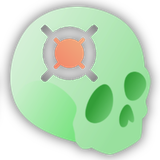

ALI no VISOR
O ALI posiciona automaticamente pontos anatômicos, chamados landmarks, em um scan 3D. Esta página explica como, passo a passo, com a matemática: o que entra, o que cada etapa faz com isso e o que sai. Onde o código faz algo que vale a pena conferir, um link leva à página de código. O módulo legado tem sua própria página.
Visão geral: o que entra, o que sai
O ALI recebe uma imagem 3D de um paciente e devolve uma lista de pontos 3D, cada um com um nome: por exemplo a ponta de um dente, ou um ponto na base do crânio. Outras ferramentas usam esses pontos para orientar um scan ou para registrar dois scans (veja ASO e AREG_IOSCBCT). Ele trabalha com dois tipos de imagem, que pedem dois métodos diferentes, então a ferramenta tem dois modos:
| Modo CBCT | Modo IOS | |
|---|---|---|
| Entrada | um volume CBCT (o scan da cabeça), ou uma pasta deles, ou uma série DICOM | uma malha de superfície intraoral dos dentes (.vtk ou .stl), ou uma pasta delas; cada vértice precisa de um número de dente, que a malha já traz ou que o Crown_Seg acrescenta antes |
| Pontos oferecidos | 119 landmarks, em 4 grupos | 153 landmarks de dentes: Occlusal 84, Cervical 56, Mucogingival 13 |
| Ideia | um agente percorre o volume, um passo de cada vez, até alcançar o ponto | o dente é fotografado de câmeras virtuais fixas, uma rede rotula os pixels de cada imagem e os pixels rotulados são projetados de volta sobre a malha |
| Saída | um arquivo por scan com todos os seus pontos, no formato que o Slicer lê (.mrk.json, coordenadas em LPS), mais run_report.json, um resumo do que foi encontrado e do que não foi | |
As redes e seus pesos treinados são os do legado: nada é treinado no VISOR. O que mudou é tudo ao redor: onde o trabalho roda, como a entrada é lida, como uma execução é limitada e relatada (O que mudou).
1. Onde roda
No VISOR, o Slicer mantém apenas um painel (ALIRemote). Ele envia o scan a um servidor, espera, baixa um zip e carrega os pontos na cena. Todo o cálculo acontece no servidor, em um ambiente Python próprio para cada modo. A ferramenta que o usuário escolhe se chama ALI e faz primeiro uma única pergunta, o modo; por trás dela, duas ferramentas de servidor separadas fazem o trabalho, ALI_CBCT e ALI_IOS. Outras ferramentas de servidor, como ASO ou VFACE, não passam pelo painel: elas pedem ao ALI os landmarks de que precisam.
Quais partes fazem o trabalho
Cada modo é um programa separado, com seu próprio ambiente Python isolado. Eles compartilham apenas um pacote auxiliar muito pequeno. Para cada modo, um arquivo de frente publica a ferramenta, e os outros arquivos guardam as etapas descritas abaixo: leitura da entrada, preparação do scan, o agente e sua rede (CBCT), a renderização das câmeras e a rede que lê as imagens (IOS), a saída e o relatório.
O que roda onde
| Etapa | Módulo legado | VISOR |
|---|---|---|
| Onde roda a matemática | na máquina do usuário, dentro do Slicer ou de um ambiente conda | só no servidor. O painel envia o scan (uma pasta é compactada em zip), baixa o resultado e o carrega |
| Pesos | baixados pelo widget | já no servidor, compartilhado pelos dois modos; o painel não os pede |
| Rótulos de dentes para IOS | o módulo executa ele mesmo a segmentação dos dentes | as malhas que já têm rótulos rodam primeiro; as outras passam por uma ferramenta separada, o Crown_Seg, e vêm depois |
| Resultado | arquivos gravados ao lado dos scans | um zip com os arquivos de pontos e o relatório de execução |
O que foi verificado. Os testes automatizados passam nos dois modos (60 para o ALI_CBCT, 190 para o ALI_IOS; veja a página de código para o que eles cobrem). Os autores do VISOR relatam que os landmarks CBCT são idênticos aos da implementação anterior do servidor em um scan real, para os sete landmarks que o ASO usa, e que as redes de coroa, rodadas em uma malha, concordam com o código do legado sobre o dente certo todas as vezes: 54 dos 73 landmarks são idênticos, e os outros 19 diferem porque o VISOR mantém as pontuações brutas em vez de cortá-las para inteiros (com esse corte restabelecido, 71 de 73 são idênticos). Eles também afirmam que a acurácia em relação a scans anotados não está estabelecida. Nada aqui foi remedido em um conjunto completo de scans.
No códigoA facade, o esquema, quem chama quem, com arquivos e linhas2. Modo CBCT: um agente caminha até o landmark
A ideia vem do aprendizado por reforço, mas na execução não há aprendizado: uma rede treinada é simplesmente usada como bússola. Para cada landmark há um agente, que é uma posição no volume. A cada passo, a rede olha um pequeno cubo da imagem ao redor do agente e diz qual dos seis movimentos de um voxel o aproxima mais do landmark. O agente se move, olha de novo e repete até começar a andar em círculos, o que significa que chegou. Ele faz isso duas vezes, primeiro em uma grade grosseira (voxels de 1 mm) para chegar perto, depois em uma grade fina (voxels de 0.3 mm) para ser preciso.
-
Básio
BaA margem anterior do forame magno, na base do crânio. -
Sela
SO centro da sela túrcica, a depressão que aloja a hipófise. -
Násio
NA raiz do nariz, onde o osso frontal e os ossos nasais se encontram.
MG_test_scan, sem dados de pacientes). Os três caminhos são reais, lidos da memória do agente enquanto o ALI_CBCT legado rodava nesse scan; eles não foram regravados com o motor do VISOR. As regras que a cena mostra são as mesmas no VISOR: o agente começa no centro do volume, move-se um voxel por passo na direção que a rede pontua mais alto, para em uma escala quando cai em uma posição que visitou nos últimos 10 passos, depois passa de 1 mm para 0.3 mm e caminha de novo. Os três caminhos levam 66, 99 e 158 passos, muito aquém do orçamento de 900 passos. Não mostrado: as seis reinicializações da média final.2.1 Leitura da entrada
Um arquivo isolado deve ser um volume (NIfTI, NRRD ou GIPL); uma superfície é recusada com uma mensagem que aponta para o ALI_IOS. Uma pasta é percorrida recursivamente e cada scan é identificado pelo seu caminho dentro da pasta, de modo que dois pacientes com um arquivo de mesmo nome em subpastas diferentes não colidem. Uma pasta de fatias DICOM é reconhecida como tal, convertida em um NIfTI por série em um local temporário, e nunca modificada.
2.2 Preparação do volume
Duas operações, uma vez por scan, antes que qualquer agente se mova.
Intensidades extremas (metal, fundo vazio) dominariam. Cada valor de voxel é cortado aproximadamente entre o 1º e o 99º percentil das intensidades do próprio volume (lidas de um histograma de 1000 classes, então os limites são aproximados), eles mesmos mantidos dentro de [-1500, 4000].
- Iintensidade de um voxel
- p1valor abaixo do qual cai cerca de 1 % dos voxels
- p99valor abaixo do qual cai cerca de 99 % dos voxels
Ilustração: o histograma e as duas linhas de corte são inventados para o desenho.
O volume é reamostrado em duas grades de voxels cúbicos, de 1 mm e de 0.3 mm, por interpolação linear. A caixa física permanece praticamente a mesma (centrada na antiga): há apenas mais voxels, e menores, e a nova contagem é arredondada para baixo até um número inteiro.
- Nnovo, snovovoxels ao longo de um eixo, e tamanho do voxel, na nova grade
- Nvoxels ao longo desse eixo no scan
- stamanho do voxel no scan
Ilustração: a grade é um esboço plano de um volume 3D, não contagens reais de voxels.
2.3 O que o agente vê
A cada passo o agente vê apenas um cubo de 64×64×64 voxels ao redor de si: 64 mm de largura na grade grossa, 19.2 mm na fina. Suas intensidades são esticadas para [-1, 1] com o mínimo e o máximo desse cubo.
- xintensidade de um voxel do cubo
- minvalor mais escuro dentro do cubo
- maxvalor mais claro dentro do cubo
Ilustração: os valores de cinza e o trajeto do cubo são inventados; o esticamento para [-1, 1] é a regra real.
O volume recebe um padding de 33 voxels em todos os lados, para que o cubo ainda tenha dados quando o agente está perto da borda. O padding só acrescenta uma margem ao redor dos dados: as posições do agente sempre contam a partir do canto do próprio scan.
2.4 A decisão
A rede produz seis pontuações, uma por movimento possível de um voxel, e o agente toma a mais alta (argmax abaixo significa “o movimento cuja pontuação é a maior”). Ela prediz uma direção, nunca uma posição.
- m*o movimento escolhido
- kum dos seis movimentos
- fka pontuação da rede para o movimento k, calculada a partir do cubo
Ilustração: as seis pontuações são inventadas; só a regra (tomar a mais alta) é real.
A rede é uma DenseNet 3D (uma rede convolucional que lê o pequeno cubo 3D) seguida de uma pequena cabeça de decisão (as últimas camadas, que transformam o que a DenseNet encontrou nas seis pontuações). A ordem dos seis movimentos faz parte dos pesos treinados: reordená-los faria o agente andar na direção errada. A cabeça termina em uma ReLU, uma etapa que zera toda pontuação negativa, herdada do treino do legado: se as seis pontuações são negativas antes dela, todas viram 0 e o agente toma o primeiro movimento. Isso é mantido de propósito, porque os pesos publicados foram treinados assim (constatação). Existe uma rede por landmark e por escala, carregada para cada par (scan, landmark) e liberada depois: um arquivo de pesos corrompido ou um erro de memória custa um landmark, não o scan.
2.5 A busca
O agente parte do centro e avança um voxel por vez. Ele lembra suas últimas 10 posições: cair em uma delas significa que está dando voltas, logo que chegou. Ele passa então para a grade mais fina, cujos voxels são 1/0.3 vezes menores, e anda de novo.
- pa posição, em voxels (o resultado é cortado até um voxel inteiro)
- sgrossatamanho do voxel da primeira grade, 1 mm
- sfinatamanho do voxel da segunda grade, 0.3 mm
Ilustração: a grade e o trajeto são inventados (os trajetos reais estão na cena 3D acima); as regras são reais.
Regras em torno da caminhada: um movimento que sairia do volume é recusado e o agente reaparece em uma posição aleatória (em qualquer lugar da grade grosseira; a menos de 10 voxels de onde a busca fina começou, na grade fina); após três saídas, o landmark é declarado não encontrado.
Somente na grade fina, o agente reinicia seis vezes, a 4 voxels de sua resposta ao longo de ±x, ±y e ±z, e caminha a cada vez até circular. Todo ponto de chegada é um voxel inteiro; a média deles é a resposta, e é por isso que ela pode cair entre dois voxels.
- pfinalo landmark
- jum dos seis reinícios
- pjonde o reinício j parou
Ilustração vista de um lado: os dois reinícios ao longo de z partem acima e abaixo do desenho (pontos vazados), e os pontos de pouso são inventados. Um substituto 2D para um movimento 3D.
O orçamento é contado em passos, não em segundos: 900 avaliações da rede por landmark por padrão, busca e média final somadas; esgotá-lo registra o landmark como não encontrado. Um limite de tempo foi abandonado de propósito, porque o resultado passava a depender de quão ocupada estava a placa gráfica (rodar quatro landmarks por vez chegou a perder um que uma execução mais tranquila encontrou).
Um landmark não depende dos outros. Toda escolha aleatória vem de um gerador iniciado a partir da semente da execução e do nome do landmark, de modo que pedir 7 landmarks ou 119 dá as mesmas coordenadas para os 7: é isso que permite ao ASO pedir só os de que precisa. Os landmarks são buscados em paralelo, no máximo 8 por vez; os autores do VISOR mediram 358.7 s com um worker e 128.0 s com oito no scan de referência com 119 landmarks, com os mesmos 114 posicionados em cada vez (números deles, não reexecutados aqui).
No códigoO laço do agente, limites, memória, respawn e orçamento no código2.6 De voxels a milímetros, e a saída
O agente conta voxels a partir do canto do scan; o arquivo precisa de milímetros. A origem do volume é retirada, e depois o resultado é multiplicado pelo tamanho do voxel.
- xmma coordenada, em milímetros, em um eixo
- vo índice do voxel encontrado pelo agente
- oorigem do volume, em milímetros
- stamanho do voxel, em milímetros
Ilustração: o índice do voxel, a origem e o tamanho do voxel são valores de exemplo.
O valor absoluto é herdado do código do legado. Ele está correto quando a origem é negativa nos três eixos, o que um volume orientado em LPS costuma ter. O VISOR não reorienta mais o volume para LPS antes da busca, como o legado passou a fazer depois de setembro de 2026, de modo que um volume armazenado em outra orientação pode dar coordenadas espelhadas (constatação). Se isso muda predições reais não foi medido: exigiria um scan armazenado em outra orientação e os pesos completos.
O resultado é um arquivo por scan com todos os landmarks de todos os grupos pedidos, em uma cópia da árvore de pastas de entrada, e um relatório de execução. O relatório lista o modo, os grupos e landmarks pedidos, os landmarks sem modelo treinado e, para cada scan, os landmarks encontrados, os não encontrados e o motivo. A execução só falha se nenhum scan produziu algum landmark.
No códigoA conversão de coordenadas, o gravador de markups e as chaves do relatório2.7 Pesos e quais landmarks rodam
As redes treinadas são encontradas a partir dos nomes das pastas que as guardam: uma pasta por landmark, com uma subpasta para cada uma das duas escalas. Um landmark só é buscado se tem uma rede treinada nas duas escalas. Dois bundles de pesos com o mesmo landmark são um erro, e não uma sobrescrita silenciosa, e alguns nomes alternativos de landmarks são tratados como um só.
Quais landmarks rodam é decidido pelos grupos marcados e pelos nomes listados. Nomear landmarks substitui os grupos em vez de restringi-los.
No códigoComo os pesos são encontrados e como os landmarks são selecionados3. Modo IOS: olhar o dente, depois projetar de volta
Uma malha não tem volume para percorrer, então o ALI_IOS transforma o problema em um problema sobre imagens comuns. Para cada dente, câmeras virtuais tiram algumas fotos dele a partir de direções fixas. Uma rede 2D colore cada pixel de cada imagem com a classe “este é um landmark do tipo 1”, “tipo 2”, “tipo 3” ou “fundo”. Os pixels de uma classe são rastreados de volta aos triângulos da malha que eles mostram, e o landmark é a média dos cantos desses triângulos, levada para a superfície.
Crown_Seg, uma ferramenta de servidor separada chamada apenas para malhas que não trazem rótulos de dentes.3.1 A entrada e os rótulos de dente
Tudo depende de saber quais vértices pertencem a qual dente. Uma malha deve portanto trazer um array de números de dente (numeração Universal: 2 a 15 para a arcada superior, 18 a 31 para a arcada inferior). Com o servidor, um lote roda em duas passadas: primeiro as malhas que já têm rótulos, para que seus landmarks sejam gravados antes de gastar qualquer tempo de segmentação; depois as outras, que a ferramenta separada Crown_Seg rotula e que passam pelo mesmo método. Qualquer uma das passadas pode falhar sem afundar a outra; a execução só falha se nenhuma produziu algo. Uma malha que o Crown_Seg não conseguiu rotular é listada como não processada, com o motivo.
No códigoNomes dos arrays de rótulos, as duas passadas e a chamada ao Crown_Seg3.2 A esfera unitária e a imagem
A malha é centralizada no meio da sua caixa delimitadora e depois dividida pela maior distância entre esse centro e um canto. Todo arco dentário cabe então em uma esfera de raio 1, de modo que as mesmas distâncias de câmera servem para todo paciente.
- pum vértice da malha
- cmeio da caixa delimitadora
- bmaxo canto da caixa mais distante de c
Ilustração: o contorno é uma forma inventada.
O resultado é convertido de volta aos milímetros da própria malha no fim. A superfície é pintada com sua própria forma: cada normal da superfície, um vetor unitário com componentes em [-1, 1], vira uma cor, o renderizador ilumina essa superfície pintada, e a profundidade é acrescentada como quarto canal. Uma imagem tem 224×224 pixels com um campo de visão de 90 graus, e cada pixel mostra exatamente um triângulo, de modo que todo pixel pode ser rastreado até o triângulo de onde vem.
3.3 As câmeras
5 vistas, raio 0.2: uma ao longo do eixo do dente, quatro inclinadas cerca de 27 graus.12 vistas, raio 0.3: seis direções ao redor da coroa, cada uma uma vez na horizontal e uma vez inclinada de 19 a 27 graus.3 vistas, raio 0.2: voltada para o lado da bochecha, e girada para os lados de ±0.35 rad.
Cada rede olha um dente a partir de seu próprio conjunto de câmeras virtuais. Para as redes oclusal e cervical, uma câmera fica no centro do dente mais uma direção fixa, multiplicada por um raio. A câmera mucogengival faz o mesmo a partir de um ponto de mira (o centro do dente deslocado por um offset típico), e depois desce 0.15 do raio.
- eposição da câmera para o dente t e a vista k
- ctcentro do dente t
- rraio da rede
- dkdireção da vista k (nem sempre de comprimento 1, veja abaixo)
Ilustração: as direções de câmera desenhadas são as reais (mandíbula inferior, vista em ângulo oblíquo); o dente é um esboço.
A tabela oclusal é copiada do código do legado com um defeito: quatro dos seus cinco vetores de direção não têm comprimento 1 (0.913, 0.913, 0.791 e 0.791, porque cada vetor inclinado é dividido pelo comprimento de um vetor diferente). Essas quatro câmeras ficam, portanto, um pouco mais perto do dente do que o raio indica. Isso é mantido deliberadamente, porque os pesos treinados viram exatamente essas vistas (constatação).
No códigoAs três tabelas de câmeras e como as câmeras Mucogingival são apontadas3.4 A rede e a decisão
Uma UNet 2D (uma rede convolucional que dá uma classe a cada pixel) lê as imagens de um dente. As redes oclusal e cervical recebem as imagens uma a uma (4 canais de entrada: cor e profundidade; 4 classes de saída); a rede mucogingival empilha suas três imagens em uma única entrada (12 canais, 3 classes de saída). A classe 0 é o fundo; as classes 1, 2 e 3 são os tipos de landmark, na ordem do catálogo. Para cada pixel, a classe é a que tem a maior pontuação bruta zc (argmax significa “a classe cuja pontuação é a maior”):
O código do legado arredondava as pontuações de O e C para inteiros antes dessa escolha; o VISOR não faz isso, então não se garante que os resultados de O e C sejam idênticos aos do legado. A rede é carregada uma vez por rede e arcada, e não uma vez por dente.
No códigoComo a rede é construída e carregada, e a escolha da classe3.5 Do pixel ao ponto 3D
Os pixels de fundo são descartados. Para O e C, só os triângulos que tocam o dente em processamento são mantidos (pelo menos um canto traz seu número); os pontos Mucogingival ficam sobre a gengiva, então mantêm tudo.
Os pixels de uma classe apontam para os triângulos que eles mostram. Cada pixel soma os três cantos do seu triângulo (um triângulo visto por dois pixels conta duas vezes), e o landmark é a média de todos esses cantos, depois ajustada ao vértice mais próximo da malha, porque a média de um trecho curvo pode flutuar levemente fora da superfície.
- Lo landmark
- Va lista de cantos coletados, três por pixel (as repetições contam)
- vum canto
- qum vértice da malha
Ilustração: os pixels, a superfície e os triângulos são inventados; as somas e o ajuste são as regras reais.
3.6 O caminho Mucogingival
Ele roda só na arcada inferior, vem desligado por padrão e cobre os dentes 19 a 31. Três comportamentos são fixos no código, sem opção. Os dentes ausentes são estimados sempre que há pelo menos quatro dentes presentes e eles cobrem pelo menos quatro números de dente: suas câmeras são apontadas a partir de uma curva ajustada pelos dentes presentes, e o ponto é marcado em sua descrição. Com menos dentes, os ausentes são pulados. Pontos forçados: se a rede não vê nenhum pixel da classe 1, os 50 pixels mais prováveis a substituem, e o ponto é marcado como “forced” com uma confiança. Nenhum último recurso: se nada cai sobre a malha, nenhum ponto é escrito. As notas também vão para o relatório de execução. O módulo legado tinha uma longa pilha de refinamento por cima disso (nivelamento, suavização, preenchimento de lacunas e mais); o VISOR não tem nada disso.
No códigoAs opções MG, os pixels forçados e as entradas do relatório3.7 Saída
Um arquivo por malha, <name>_lm_Pred.mrk.json, com todas as redes e arcadas juntas, em uma cópia da árvore de pastas de entrada. Se o usuário nomeia landmarks, só rodam as redes necessárias para produzi-los, e os outros são removidos dos arquivos e do relatório. O relatório acrescenta as redes usadas, os arquivos de pesos que não pôde reconhecer, as arcadas sem modelo, os landmarks marcados como duvidosos e quais malhas foram segmentadas na hora.
4. O que você pode escolher
O painel do Slicer é desenhado a partir da descrição da ferramenta feita pelo servidor, então mostra apenas o que a ferramenta permite.
| Opção | O que faz | Exibida no painel |
|---|---|---|
| Modo | CBCT ou IOS | sim, primeiro campo |
| Entrada | um arquivo, ou uma pasta de arquivos; o formulário também pode oferecer arquivos de teste hospedados | sim |
| Landmarks | quais pontos posicionar; nomeá-los substitui os grupos | sim, caixas de seleção em abas por grupo |
| Regiões (CBCT) / redes (IOS) | grupos inteiros; Mucogingival vem desligado por padrão | não, oculto |
| Modelo, dispositivo, passos de busca, semente, workers | parâmetros técnicos: a pasta de pesos, GPU ou CPU, o orçamento de 900 passos, a semente aleatória, a largura paralela | não, oculto |
Sem nada marcado, uma execução CBCT busca todos os 119 landmarks. Os parâmetros IOS do legado para a lista de dentes e os parâmetros de renderização sumiram: todo dente rotulado é processado, e a renderização é fixa. Dois limites do servidor se aplicam: um teto global de upload de 500 MB e nenhum limite de tempo.
Quando a execução termina, o painel descompacta o resultado, lê o relatório, carrega todo arquivo de pontos na cena e mostra um resumo. Por causa de um bug, o resumo diz atualmente sempre “0 scan(s), 0 landmark(s) written” embora os arquivos carreguem corretamente (constatação).
No códigoTodos os argumentos, seu tipo e padrão, o esquema e o código do cliente5. O que é predito e o que é calculado
Só três blocos são redes treinadas. Todo o resto é geometria ou contabilidade, e pode ser analisado sem nenhum modelo.
| Bloco | Natureza |
|---|---|
| Detecção da entrada, conversão DICOM | calculado |
| Limitação de intensidade, reamostragem | calculado |
| Direção de movimento do agente (CBCT) | predito DenseNet 3D e uma cabeça de decisão, 6 classes |
| Teste de circulação, mudança de escala, média final, respawn | calculado uma memória de 10 posições, uma média, um gerador aleatório com semente |
| Voxel para milímetros | calculado |
| Rótulos de dente de uma malha sem rótulos (IOS) | predito por outra ferramenta, o Crown_Seg |
| Esfera unitária, posicionamento das câmeras, ajuste do arco | calculado geometria, com um a priori fixo para a mira Mucogingival |
| Classe de cada pixel (IOS) | predito UNet 2D |
| Pixel para triângulo, para centroide, para ajuste | calculado |
| Ponto Mucogingival forçado | calculado os 50 pixels mais prováveis da rede |
Nada é treinado no VISOR: a portagem faz só inferência e descartou o código de treino do legado.
Ambiente de software
Cada modo roda em seu próprio ambiente Python isolado no servidor, para que os dois conjuntos de bibliotecas (que precisam de versões diferentes do PyTorch) nunca se encontrem. Nada mais é instalado no Slicer. Uma placa gráfica é opcional: sem ela, o trabalho recai no processador, com um aviso.
No códigoAs versões de cada biblioteca, por modo6. O que mudou em relação à lógica do legado
As redes são as mesmas; a lógica ao redor delas foi portada do código do legado como estava em agosto de 2026, e várias correções posteriores do legado não foram trazidas. Quais delas importam para os resultados não foi medido.
| Assunto | Legado | VISOR |
|---|---|---|
| Orientação do volume CBCT | reorientado para LPS antes da busca, desde setembro de 2026 | não é feito: o volume é lido como armazenado |
| Orçamento de busca | 1000 passos, mais uma salvaguarda de tempo de 900 s, mais uma parada antecipada após 64 passos em terreno conhecido | 900 passos por padrão; sem salvaguarda de tempo; para quando o agente circula (últimas 10 posições) |
| Onde um agente pode pisar | dentro da parte do volume que é de fato amostrada | em qualquer lugar do volume sem padding |
| Média final | cada uma das 6 reinicializações limitada por uma contagem de passos, depois um aviso | o mesmo contador da busca; um orçamento vazio significa que o landmark não é encontrado |
| Aleatoriedade | um gerador aleatório global | um gerador por landmark, a partir da semente e do nome |
| Paralelismo | sequencial | até 8 processos em paralelo |
| Pesos | se vários arquivos correspondem, vence o último | as duas escalas são obrigatórias; dois bundles com o mesmo landmark são um erro |
| Landmarks não posicionados | um arquivo NotFound separado | listados no relatório de execução |
| Saída do CBCT | um arquivo por grupo, em uma pasta plana | um arquivo por scan, em uma cópia da árvore de pastas de entrada |
| DICOM | convertidos dentro da pasta de entrada | convertidos na pasta temporária do job, nunca na entrada |
| Exibição dos pontos | gravada desligada | gravada ligada, com uma descrição por ponto |
| Saída do IOS | um arquivo por (paciente, arcada, rede) | um arquivo por malha |
| Classes de pixel O e C | pontuações arredondadas para inteiros primeiro | pontuações brutas |
| Mucogengival | nivelamento, escala pela distância entre molares, suavização, ajuste à superfície, completar linhas, preencher lacunas, escolha de patches | nada disso: uma passada por dente |
| Dentes ausentes (MG) | desligado por padrão | estimados quando há pelo menos 4 dentes presentes cobrindo 4 números, e anotados |
| Rótulos de dente para IOS sem rótulos | o módulo lança ele mesmo a segmentação | uma ferramenta separada, o Crown_Seg, depois de uma primeira passada nas malhas rotuladas |
| Formatos IOS e nomes de rótulos | cinco formatos de malha | somente .vtk e .stl |
7. Problemas conhecidos no VISOR
São os pontos que um usuário ou um desenvolvedor deve conhecer. Cada um foi verificado no código e é descrito, com sua evidência, na página de código; a lista também aparece nas constatações.
- Uma pasta de série DICOM gera um arquivo de saída oculto. Quando a entrada é a pasta de uma série, a saída se chama
._lm_Pred.mrk.json, de modo que as ferramentas a jusante que associam arquivos pelo nome não vão pareá-la com o scan. Evidência. - Sem reorientação para LPS. Um CBCT armazenado em outra orientação pode dar coordenadas espelhadas. O efeito sobre predições reais não foi medido. Evidência.
- O resumo do painel está errado. Ele sempre mostra zero scans e zero landmarks. Os arquivos em si carregam corretamente. Evidência.
- ReLU na última camada. Mantida do legado porque os pesos foram treinados com ela. Evidência.
- Refinamento Mucogingival não portado. A acurácia em um conjunto de scans não foi medida. Evidência.
- Dois scans com o mesmo nome se sobrescrevem (
a.nii.gzea.nrrdem uma pasta). Evidência.
8. Literatura
As redes são as publicadas: o ALI_CBCT segue Gillot et al. 2023 (agentes em um volume multiescala, escalas de 1 mm e 0.3 mm), o ALI_IOS segue o artigo CLIP 2022 para o modelo oclusal (esfera unitária, cinco vistas por dente, segmentação por patches). O caminho Mucogingival é inédito na literatura, como no lado do legado. A bibliografia é a da própria ferramenta: fontes do ALI; a página do legado discute cada artigo diante do código em sua seção 8.